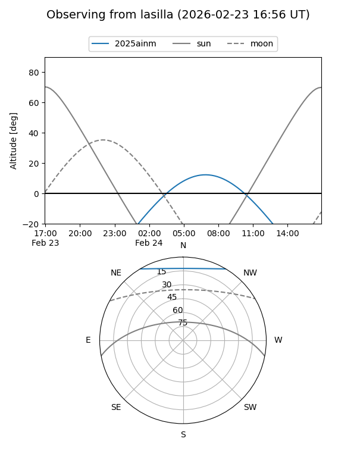
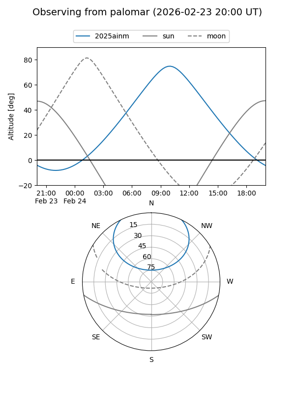
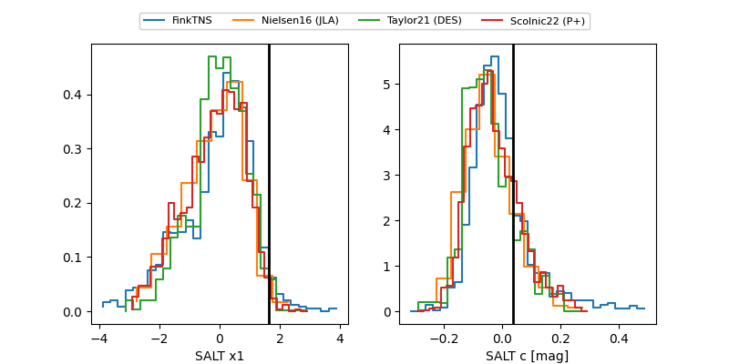

2025ainm
Target 2025ainm at 2026-01-26 00:16
Aliases and brokers:
FINK: link
Lasair: link
ALeRCE: link
TNS: link
YSE: link
alt names
ZTF25acjbodj (ztf,fink_ztf)
2025ainm (tns,yse)
ATLAS25qld (atlas)
Coordinates:
equatorial (ra, dec) = 186.4621,+48.58008
equatorial (HMS+DMS) = 12:25:50.89,+48:34:48.30
galactic (l, b) = (134.2712,+67.98090)
Flags:
Photometry:
last ztfg=20.16, ztfr=20.25
1 ztfg, 1 ztfr detections
Lightcurve

Visibility


Additional plots
